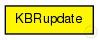
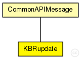

This documentation is released under the Creative Commons license
This documentation is released under the Creative Commons licenseMessage type to inform overlay nodes about new or left nodes
Author: Bernhard Heep
The following diagram shows usage relationships between types. Unresolved types are missing from the diagram. Click here to see the full picture.
The following diagram shows inheritance relationships for this type. Unresolved types are missing from the diagram. Click here to see the full picture.
| CommonAPIMessage (packet) |
Base class for all common API message types |
| Name | Type | Description |
|---|---|---|
| node | NodeHandle |
the node that has joined or left the overlay |
| joined | bool |
true if node has joined, false if node has left |
| type | int |
message type |
// // Message type to inform overlay nodes about new or left nodes // // @author Bernhard Heep // packet KBRupdate extends CommonAPIMessage { NodeHandle node; // the node that has joined or left the overlay bool joined; // true if node has joined, false if node has left }
This documentation is released under the Creative Commons license